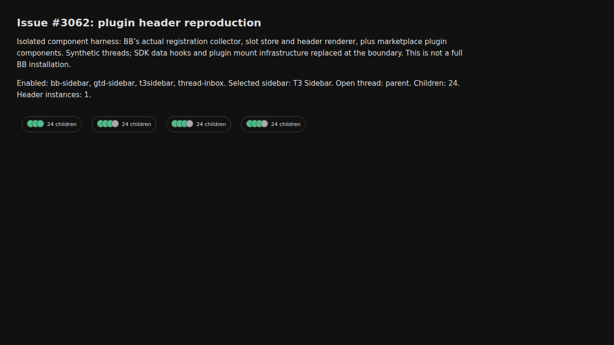
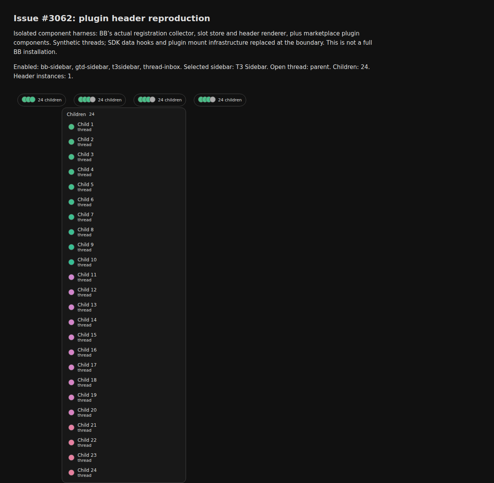

#3062 · Sidebar plugins duplicate parent/children header controls
REPRODUCED at the component/browser layer. High confidence in the demonstrated mechanism; medium confidence that it explains the reporter’s installation, whose enabled plugins were not available.
What changed in this investigation
This report supersedes the earlier split-layout diagnosis. A single header with four enabled marketplace sidebar plugins reproduces four child-count pills and four parent chips. Choosing T3 Sidebar only selects the sidebar body; it does not suppress other plugins’ header actions. T3 alone produces one pill, including after four re-registrations. The screenshot’s three-dot first pill followed by three four-dot pills matches BB Sidebar, GTD Sidebar, T3 Sidebar, and Thread Inbox in BB’s plugin-ID sort order.
Claims versus findings
| Claim | Finding |
|---|---|
| Four duplicate panes explain the screenshot | Not established. Four controls reproduce with exactly one header, without any split layout. |
| Identical parent titles are stale child titles | These plugins intentionally show the parent’s title in their back-to-parent buttons. |
| 24 children trigger duplication | One child is sufficient when four sidebar plugins contribute controls. |
| T3 Sidebar is involved | Its controls match. T3 alone does not duplicate; three other marketplace sidebars register equivalent controls. |
| Reporter has these four plugins enabled | Unverified. Visual match and reproduction support this hypothesis but do not prove installed state. |
Environment
Linux, Node 24.18.0, headless Chrome driven by Doobie 0.1.2. BB trusted main commit 1ab96a0ce28c28774c33b169c4dfb8df0ab46c58. Two clean detached source checkouts, separate browser profiles and ports 43162/43163. No BB server, daemon, agents, or database. Existing workspace dependencies compiled an isolated fixture; no full application build was run.
- SawyerHood/bb-plugin-t3sidebar: v0.1.0,
9eecc40d9b2b5d1948c2a23d13efcf3e0ed84b0e - yusuf8834/bb-sidebar: v0.2.4,
77e36967ff2e86d3c43a22ec1a68baedc6db05d2 - smsunarto/bb-plugins: gtd-sidebar/v0.4.2,
c1fe661c414f12ff16106642338f37c45b01285d - wy3z/bb-plugin-thread-inbox: v0.2.1,
ed3a6874a971c33d8ae369d59119c34cf17e7924
Minimal reproduction
- Load the four plugins’ app registrations with BB’s real collector and slot store.
- Resolve the sidebar preference to
t3sidebar/inbox. - Supply a synthetic parent and 24 children through the SDK data hooks.
- Render one real
PluginThreadHeaderActionscomponent. - Open each pill: all four lists contain the same 24 children.
- Open a child: four buttons say
Back to parent: Parent fixture. - Remove the other three plugins: only one pill remains.
Repeatable setup · Pinned source fetch · Browser assertions · First results · Second results.
T3 only: 1 pill T3 re-registered four times: 1 pill Four enabled sidebar plugins, T3 selected: 4 pills; dots [3,4,4,4] Four plugins, one child: 4 pills Four plugins, child open: 4 identical parent buttons Disable other three plugins: 1 pill Each of four popups: 24 children
Expected for sidebar-owned navigation: one control from the selected sidebar. Actual: all enabled plugins’ header contributions render.


Root cause
Sidebar selection resolves one replacement. Separately, the slot store sorts plugin IDs and aggregates header registrations across every enabled plugin. The header renderer maps every action without consulting the selected sidebar.
T3 registrations, BB Sidebar registrations, GTD registrations, and Thread Inbox registrations each contribute a parent action and a children action. Identical action IDs are valid across different plugin IDs. This is a contribution-ownership problem, not evidence of a render loop.
Proposed fix
Immediate workaround: disable unused sidebar plugins; merely selecting one sidebar does not remove their header controls. A durable fix should let sidebar plugins limit these navigation actions to when their sidebar is selected, or have BB own a single parent/children navigation control. Do not globally deduplicate header actions by ID or hide every unselected plugin’s header actions: unrelated plugins legitimately contribute independent controls.
Review of PR #3064
The diff rejects duplicate logical pane content during layout restoration. Its test writes four identical panes into local storage. That demonstrates a separate persistence behavior but does not establish the path seen here. No split layout is involved in this reproduction, so changing its persistence validation will not resolve this four-plugin case. The PR was read only, not checked out or executed.
Verification and limits
The same agent repeated all six scenarios and four popup assertions using a second clean checkout at the same trusted commit, a different port and a fresh Doobie profile. Both output JSON files are byte-identical. This is not an independent verification. The selected sidebar was checked with BB’s real preference resolver. The marketplace installer, full desktop application and the reporter’s enabled-plugin state were not tested. Synthetic thread data, a simplified plugin mount wrapper, unused sidebar-body stubs and basic fixture CSS keep this a focused component reproduction.
Related issues
No additional issue is required for this finding. The earlier report’s persistence scenario should not be presented as a confirmed explanation of this screenshot.
Browser assertions
const p = await browser.getPage('repro');
await p.goto('http://127.0.0.1:43162');
await p.waitForSelector('button[aria-label="24 child threads"]');
const results = [];
for (const [name,ids,count,thread,reloads,expected] of [
['T3 only',['t3sidebar'],24,'parent',1,1],
['T3 reloaded four times',['t3sidebar'],24,'parent',4,1],
['four sidebar plugins',['bb-sidebar','gtd-sidebar','t3sidebar','thread-inbox'],24,'parent',1,4],
['four plugins, one child',['bb-sidebar','gtd-sidebar','t3sidebar','thread-inbox'],1,'parent',1,4],
['four plugins, child open',['bb-sidebar','gtd-sidebar','t3sidebar','thread-inbox'],24,'child-0',1,4],
['disable other plugins',['t3sidebar'],24,'parent',1,1]
]) {
const slots=await p.evaluate((ids,count,thread,reloads)=>window.configure(ids,count,thread,reloads),ids,count,thread,reloads);
const selected=await p.evaluate(()=>window.selectedSidebar);
if(selected.kind!=='plugin'||selected.registration.pluginId!=='t3sidebar')throw Error('wrong selected sidebar');
const buttons=await p.$$eval('#header button',els=>els.map(e=>({label:e.getAttribute('aria-label'),plugin:e.closest('[data-bb-plugin]')?.getAttribute('data-bb-plugin'),dots:e.querySelectorAll('[style*="background-color"]').length})));
if(buttons.length!==expected) throw Error(name+': expected '+expected+', got '+buttons.length);
results.push({name,selectedSidebar:selected.registration.pluginId,slots,buttons});
}
await p.evaluate(()=>window.configure(['bb-sidebar','gtd-sidebar','t3sidebar','thread-inbox']));
for(const id of ['bb-sidebar','gtd-sidebar','t3sidebar','thread-inbox']){
await p.click(`[data-bb-plugin="${id}"] button[aria-expanded]`);
const count=await p.$$eval(`[data-bb-plugin="${id}"] li`,els=>els.length);
if(count!==24)throw Error(id+' popup count '+count);
results.push({popup:id,children:count});
await p.click(`[data-bb-plugin="${id}"] button[aria-expanded]`);
}
await p.screenshot({path:'/tmp/four-plugins.png'});
await p.click('[data-bb-plugin="t3sidebar"] button[aria-expanded]');
await p.screenshot({path:'/tmp/children-popup.png',fullPage:true});
console.log(JSON.stringify(results,null,2));
Evidence handling
Issue content was treated as claims. No issue-supplied commands or linked PR code were executed. Marketplace plugin sources were inspected and exercised at the user’s explicit request. The original screenshot was viewed but is not republished here.